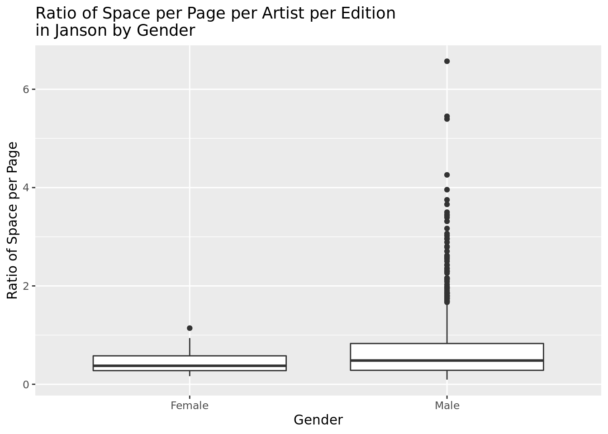
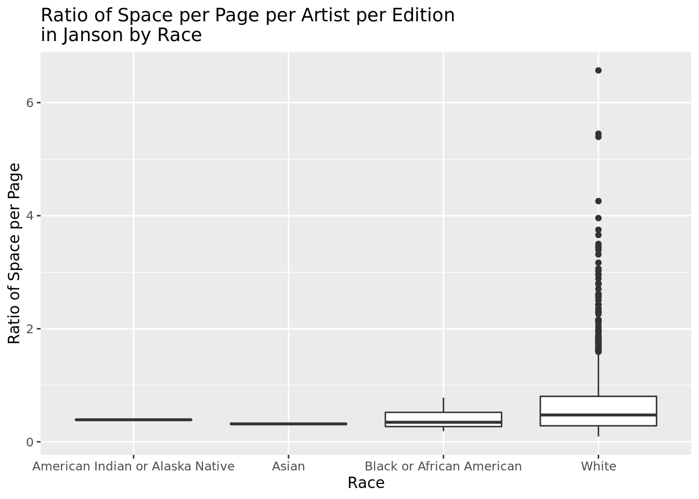
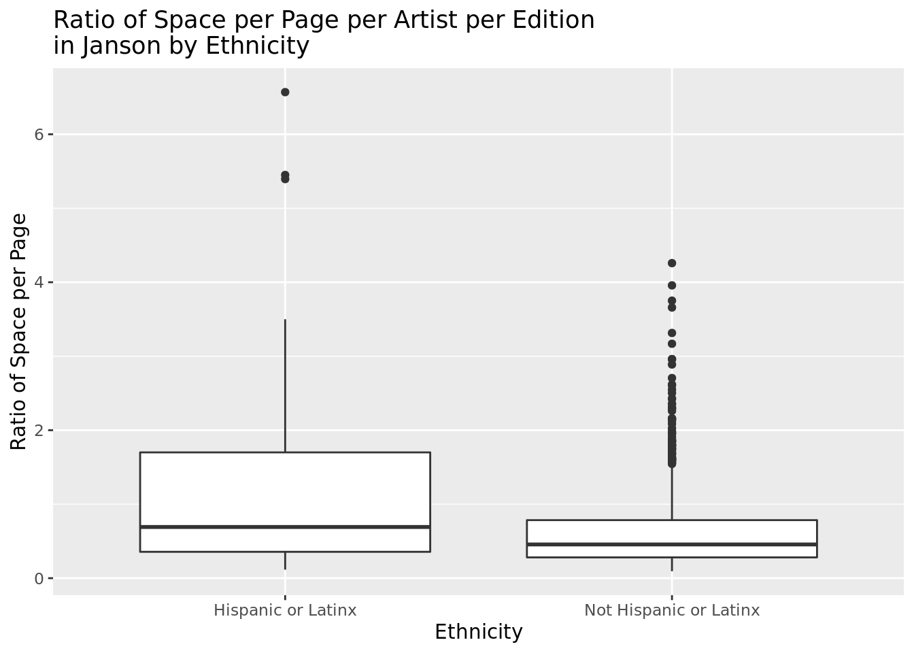
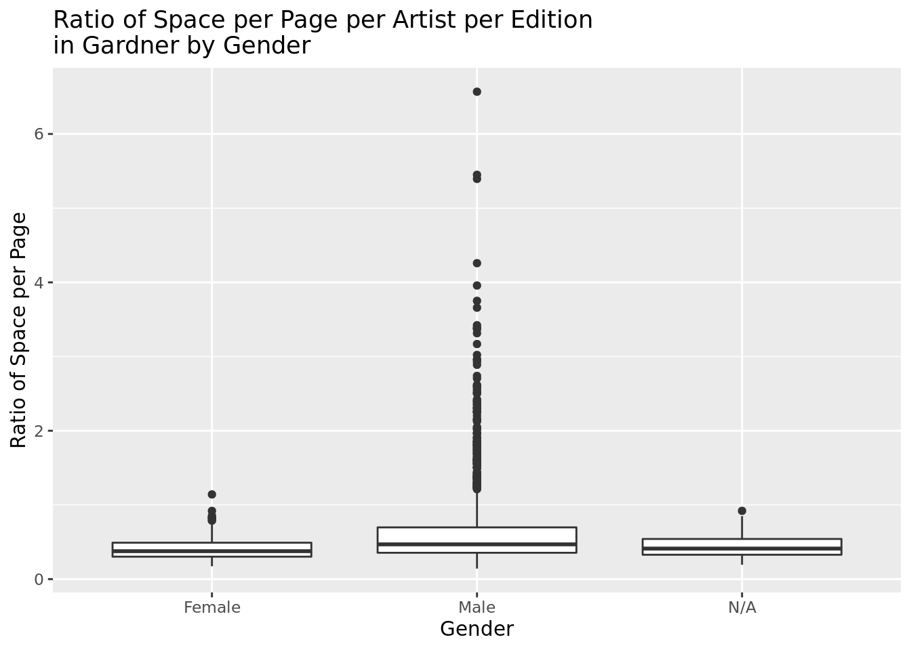

join gardnerjansonMoMa with Whitney through antijoin
EDA: Bivariate Plots and MLR with SpaceRation
Janson:
SpaceRatioPerPage with Gender
ggplot(janson, aes(x=ArtistGender, y= SpaceRatioPerPage))+geom_boxplot()+labs(title ="Ratio of Space per Page per Artist per Edition in Janson by Gender",x ="Gender",y ="Ratio of Space per Page")

SpaceRatioPerPage with Race
ggplot(janson, aes(x=ArtistRace, y= SpaceRatioPerPage))+geom_boxplot()+labs(title ="Ratio of Space per Page per Artist per Edition in Janson by Race",x ="Race",y ="Ratio of Space per Page")

SpaceRatioPerPage with Ethnicity
ggplot(janson, aes(x=ArtistEthnicity, y= SpaceRatioPerPage))+geom_boxplot()+labs(title ="Ratio of Space per Page per Artist per Edition in Janson by Ethnicity",x ="Ethnicity",y ="Ratio of Space per Page")

SpaceRatioPerPage with Nationality
ggplot(janson, aes(x=ArtistNationalityOther, y= SpaceRatioPerPage))+geom_boxplot()+labs(title ="Ratio of Space per Page per Artist per Edition in Janson by Nationality",x ="Nationality",y ="Ratio of Space per Page")
MLR of Janson with Gender +Race + Nationality + Ethnicity ~ SpaceRatioPerPage
Call:
lm(formula = SpaceRatioPerPage ~ ArtistRace + ArtistEthnicity +
ArtistGender + ArtistNationalityOther, data = janson)
Residuals:
Min 1Q Median 3Q Max
-0.31271 -0.13922 -0.05374 0.09048 0.92620
Coefficients:
Estimate Std. Error t value Pr(>|t|)
(Intercept) 0.374224 0.150961 2.479 0.01328 *
ArtistRaceAsian -0.117036 0.201165 -0.582 0.56079
ArtistRaceBlack or African American -0.071217 0.147590 -0.483 0.62949
ArtistRaceWhite -0.039936 0.142574 -0.280 0.77943
ArtistEthnicityNot Hispanic or Latinx 0.016095 0.053113 0.303 0.76191
ArtistGenderMale 0.034123 0.019702 1.732 0.08347 .
ArtistNationalityOtherBritish 0.009622 0.019843 0.485 0.62781
ArtistNationalityOtherFrench 0.037112 0.014081 2.636 0.00848 **
ArtistNationalityOtherGerman -0.032213 0.020465 -1.574 0.11567
ArtistNationalityOtherOther 0.009929 0.016216 0.612 0.54042
ArtistNationalityOtherSpanish 0.055779 0.057727 0.966 0.33406
---
Signif. codes: 0 '***' 0.001 '**' 0.01 '*' 0.05 '.' 0.1 ' ' 1
Residual standard error: 0.1998 on 1623 degrees of freedom
Multiple R-squared: 0.01582, Adjusted R-squared: 0.009756
F-statistic: 2.609 on 10 and 1623 DF, p-value: 0.003815
glance(jansonMLR)$r.squared
[1] 0.01582008
Gardner:
SpaceRatioPerPage vs Gender
ggplot(gardner, aes(x=ArtistGender, y= SpaceRatioPerPage))+geom_boxplot()+labs(title ="Ratio of Space per Page per Artist per Edition in Garder by Gender",x ="Gender",y ="Ratio of Space per Page")

SpaceRatioPerPage vs Race
ggplot(gardner, aes(x=ArtistRace, y= SpaceRatioPerPage))+geom_boxplot()+labs(title ="Ratio of Space per Page per Artist per Edition in Gardner by Race",x ="Race",y ="Ratio of Space per Page")+theme(axis.text.x =element_text(angle =45, size =5))+ylim(0, 2.0)
SpaceRatioPerPage vs Ethnicity
ggplot(gardner, aes(x=ArtistEthnicity, y= SpaceRatioPerPage))+geom_boxplot()+labs(title ="Ratio of Space per Page per Artist per Edition in Gardner by Ethnicity",x ="Ethnicity",y ="Ratio of Space per Page")
SpaceRatioPerPage vs Nationality
ggplot(gardner, aes(x=ArtistNationalityOther, y= SpaceRatioPerPage))+geom_boxplot()+labs(title ="Ratio of Space per Page per Artist per Edition in Gardner by Nationality",x ="Nationality",y ="Ratio of Space per Page")